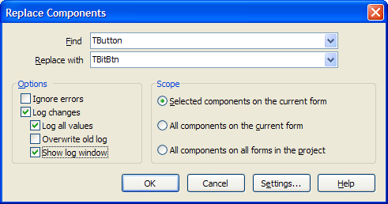
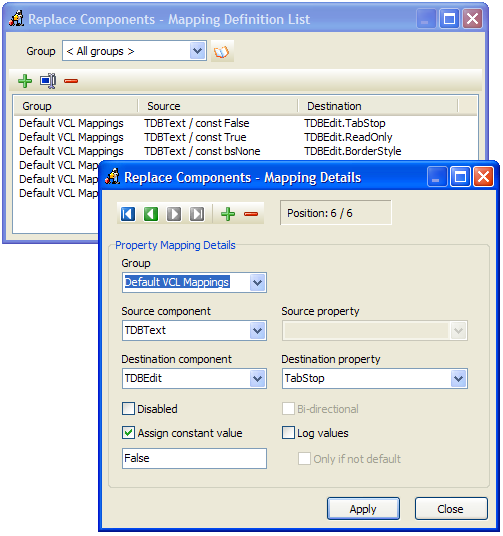

Replace Components |
|
This expert enables you to easily replace components on a form or in a whole project. For example, have you ever wanted to replace all TBitBtn components in a project with TButton components? To use this expert, first choose the component you want to replace, followed by the component you want to replace it with. Then click OK to have the expert perform its magic. If you select the component to replace in the IDE before calling up this expert, you won't have to select it in this dialog box.
This expert does everything it can to preserve and map properties and can handle all of the basic types such as integers, strings, and enums. It can also handle many more complex properties such as component references, TStrings, TFields, properties that support calling TPersistent.Assign between each other (such as TFont/TBitmap), and conversions between properties of slightly differing but largely compatible types such as TStrings to a string and conversions between various ordinal types, within the limitations of the RTTI GetPropValue and SetPropValue functions. You will generally be able to map from ordinals to floats to strings, for example, but mapping from strings to integers might raise errors if the string does not represent an integer.  Options
•Ignore Errors: Continue attempting to replace components, even if some property conversions or component creations fail. Otherwise, when errors happen, you will be presented with a dialog allowing you to ignore the error, ignore all errors, or abort the conversion. •Log changes: Log the progress of the replacement to a CSV file named ReplaceComp.log (and optionally to the screen as well) •Log all values: Log both common/direct property assignments, in addition to custom mapping assignments •Overwrite old log: Overwrite any previous replacement log files, instead of appending to the existing log •Show log window: Show the GUI log window after the conversion is done. This will allow you to browse the log, review any errors, and export the log to XML/CSV. You can also select individual log items to be copied to the clipboard.
Scope: Look for components to replace only in the currently selected components, the current form, or anywhere in the active project.
Custom Mapping Rule Details
If you access the configuration for this expert in the main GExperts configuration screen, you can configure custom mapping rules between component classes where the source and destination property names or property types are not direct matches.
•Group: Each custom property conversion is a member of a specific group. The groups are listed in the Mapping Definition list screen in the Group combobox and the Group column of the custom mapping list. Groups can be imported and exported and then shared using XML files via the "Open group list" button. •Source component: Select the component class being replaced for the defined mapping rule to be activated •Source property: The replaced component property name to map to the defined destination property. For both the source and destination property names, if a subproperty descends from TPersistent, you can specify subproperties, such as mapping strings like Font.Name to a destination FontName property. •Destination component: Select the component class that must be selected to replace the source component class for this mapping rule to be activated •Destination property: Select the property of the destination component class that maps to the source property •Disabled: Disable copying of the source property to the destination property. This is useful when two components share a same-named property, but the properties do not perform the same function or are of incompatible types. •Bi-directional: Treat the source to destination mapping rule as also applying from the destination to the source (for example, to map TEdit.Text to TMemo.Lines, as well as TMemo.Lines to TEdit.Text) •Log values: Log the property conversion to the log •Only if not default: Only log the conversion if the source property is not set to the component's default value. This option is useful to log changed source properties where there is no direct equivalent destination property. You can then scan the log to determine if any manual/code changes must be done to complete a full conversion. •Assign constant value: Assign a constant value to the destination property rather than using the source property value. This is useful to convert properties where there is no direct equivalent in the source component, but the destination component's property should not remain at the default value. With this option selected, the source property is no longer used for the conversion, but is instead replaced by the value typed as the constant value.  Note: Several types of more obscure property conversions are not supported such as mapping set membership to a Boolean, mapping between non-name compatible sets or enums, mapping between TPersistent properties where calling Assign does not work (for example converting TBitBtn.Glyph to TImage.Picture), and conversions such as TTabbedNotebook to TPageControl, where custom coding/mappings would be required to create new tabs and move components to them. Also, note that you can not replace individual TField descendent objects, because the VCL prevents more than one component with the same FieldName on each dataset, and the Replace Components tool requires both objects to be present at once, to copy the old properties to the new object.
|